Lab 8: Create a Service¶
Learning Objectives¶
By the end of this lab you will be able to:
- Generate a python-and-template service package with
ncs-make-package. - Define YANG inputs, map them into an IOS-XR XML template, compile, and reload packages.
- Deploy a service, intentionally remove configuration on devices to create drift, then re-deploy to restore intent.
Time Budget¶
- Service skeleton — 7 min
- Implement & test — 19 min
- Verify CLI — 4 min
Total — 30 min
Prerequisites¶
- Lab 7: Device Groups & Templates completed — you are comfortable with Commit Manager and device configuration.
- NSO instance path matches your environment (examples use
~/NSO-INSTALL/nso-instance/).
Procedure¶
Unlike templates, services attach lifecycle semantics: NSO tracks what a service applied and can detect drift when someone changes the network outside the service.
Context: services vs templates¶
| Feature | Template | Service |
|---|---|---|
| Push config to multiple devices | Yes | Yes |
| Detect if config was changed | No | Yes (check-sync) |
| Re-deploy to restore config | No | Yes |
| Rollback service-level changes | No | Yes |
Step 1: Inspect ncs-make-package¶
(Use ncs-make-package -h without piping if your shell lacks head.)
Step 2: Create the service skeleton¶
Run the generator inside the instance packages/ directory so you do not need to move folders afterward.
Run inside packages/
If you generate elsewhere, copy the resulting folder into ~/NSO-INSTALL/nso-instance/packages/ before compiling.
cd ~/NSO-INSTALL/nso-instance/packages/
ncs-make-package --service-skeleton python-and-template STATIC
Step 3: Understand the package layout¶
Open the project in VS Code and expand the explorer to the packages folder.
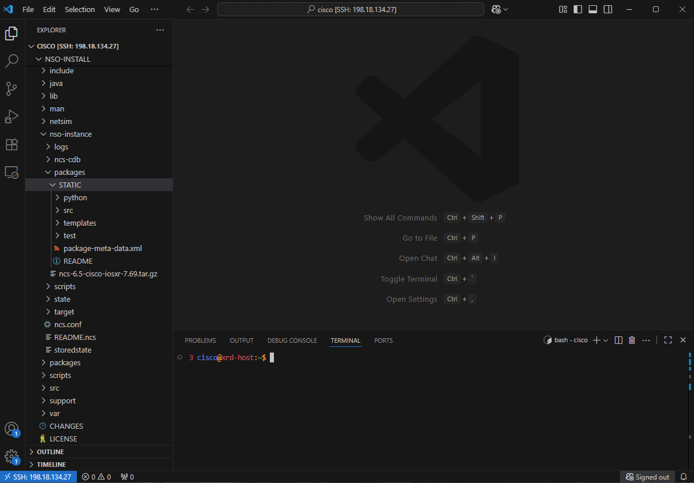
After the script finishes, STATIC/ should resemble:
STATIC/
├── package-meta-data.xml
├── src/
│ └── yang/
│ └── STATIC.yang
├── templates/
│ └── STATIC-template.xml
└── python/
└── STATIC/
└── main.py
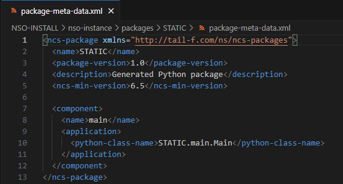
package-meta-data.xml contains the service version and other metadata.
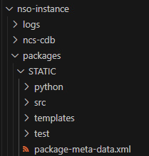
Step 4: Capture XML with commit dry-run¶
Build the target IOS-XR static route in the NSO CLI, then export XML with commit dry-run outformat xml — do not leave the candidate committed.
Example session (prompts may differ):
admin@ncs# config
admin@ncs(config)# devices device xr-1 config
admin@ncs(config-config)# router static
admin@ncs(config-static)# address-family ipv4 unicast
admin@ncs(config-static-afi)# 11.11.11.11/32 10.1.1.2 metric 100 description "set by NSO"
admin@ncs(config-static-afi)# commit dry-run outformat xml
You should see XML shaped like the fragment below (namespaces may vary by NED build):
<devices xmlns="http://tail-f.com/ns/ncs">
<device>
<name>xr-1</name>
<config>
<router xmlns="http://tail-f.com/ned/cisco-ios-xr">
<static>
<address-family>
<ipv4>
<unicast>
<routes-ip>
<net>11.11.11.11/32</net>
<address>10.1.1.2</address>
<metric2>
<metric>100</metric>
</metric2>
<description>set by NSO</description>
</routes-ip>
</unicast>
</ipv4>
</address-family>
</static>
</router>
</config>
</device>
</devices>
Do not commit the dry-run candidate
Exit without committing the exploratory static route — answer no if asked to commit, or end / exit per your CLI help.
Step 5: Populate the service template¶
The generated skeleton includes an XML template and a YANG model — you will edit both.
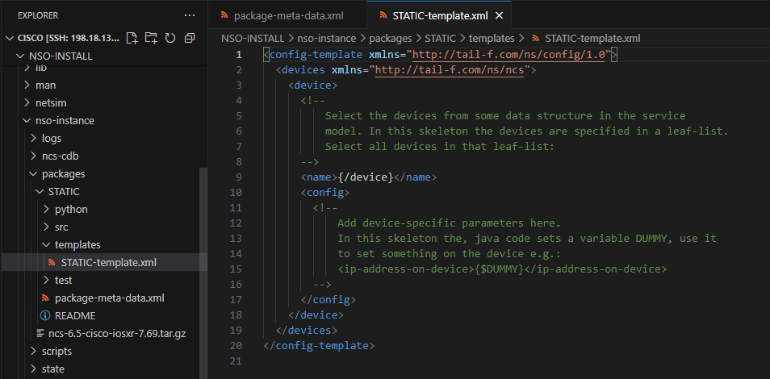
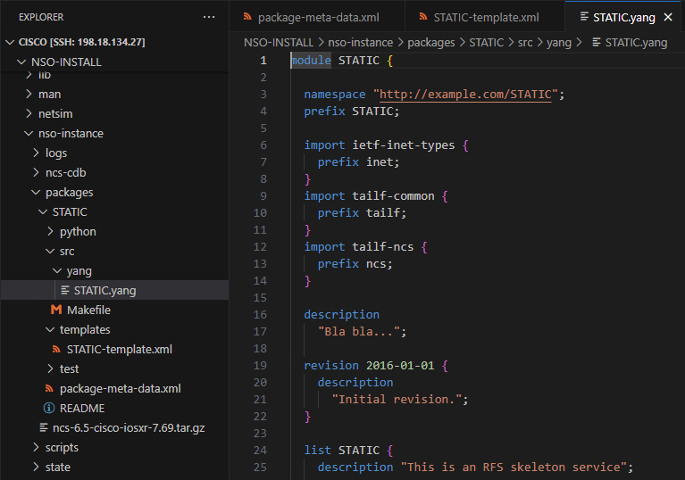
Copy only the router subtree (inside <config>) into STATIC-template.xml:
<router xmlns="http://tail-f.com/ned/cisco-ios-xr">
<static>
<address-family>
<ipv4>
<unicast>
<routes-ip>
<net>11.11.11.11/32</net>
<address>10.1.1.2</address>
<metric2>
<metric>100</metric>
</metric2>
<description>set by NSO</description>
</routes-ip>
</unicast>
</ipv4>
</address-family>
</static>
</router>
Step 6: Add YANG variables¶
Replace literals with service inputs. Typical leaves:
- Destination prefix (for example
11.11.11.11/32) - Forwarding address (for example
10.1.1.2) - Metric (default 100)
- Description (default
set by NSO)
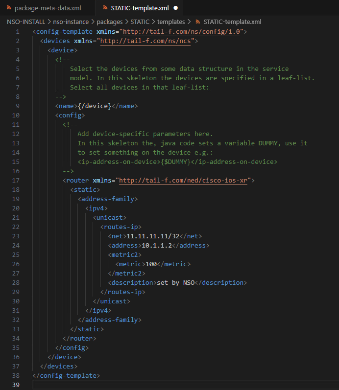
Update STATIC-template.xml¶
Reference those leaves with your template engine’s variable syntax (for example {$DEST} / {$CONTEXT} patterns — follow the generated skeleton comments).
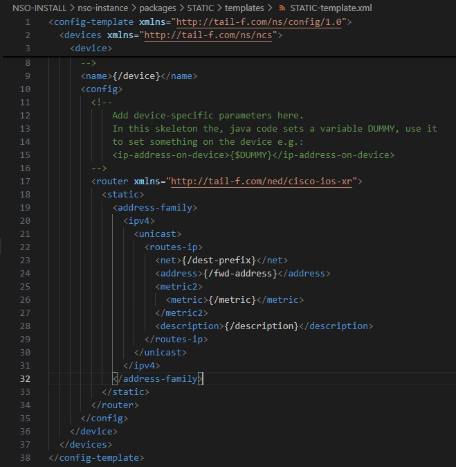
Update STATIC.yang¶
Make dest-prefix and fwd-address mandatory; give metric and description defaults (exact syntax follows your YANG tutorial).
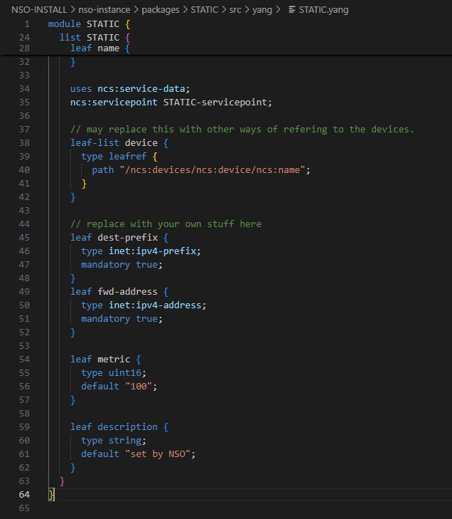
Step 7: Compile the package¶
(Warnings policy depends on your flags; --fail-on-warnings may stop the build if YANG has issues.)
Step 8: Reload packages¶
- Web UI → ncs:packages → Actions → Reload.
- Confirm result is true.
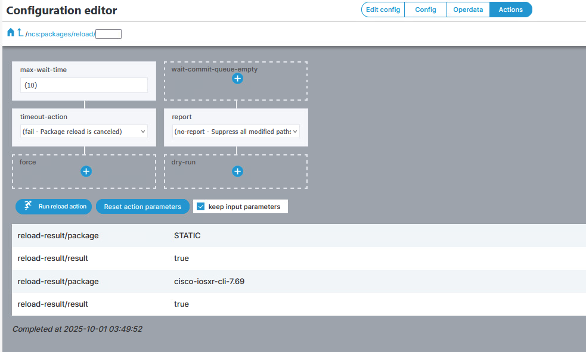
- Verify package STATIC appears.
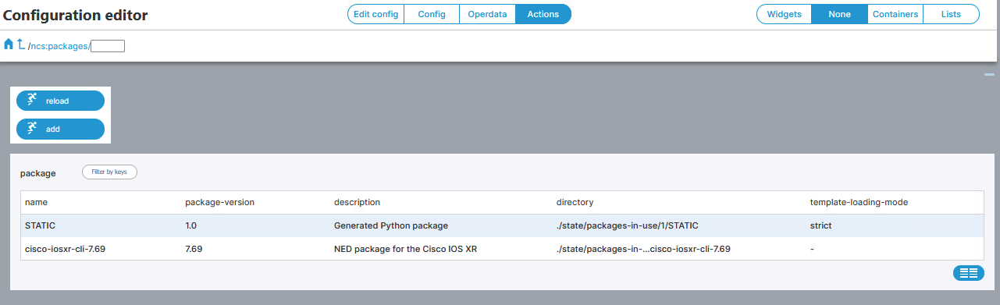
Step 9: Deploy the service instance¶
- Homepage → Services.
- Select the STATIC service.
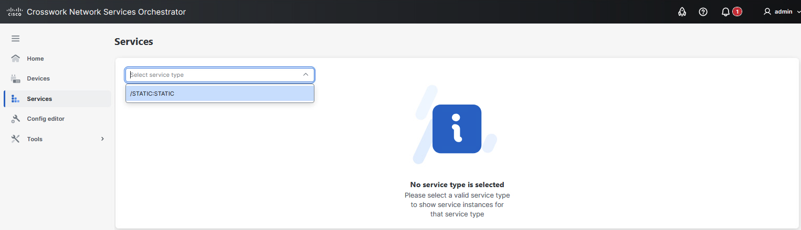
- + Add service — click the + button.
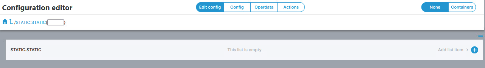
- Name it (for example
static-11.11.11.11) and fill dest-prefix, fwd-address.
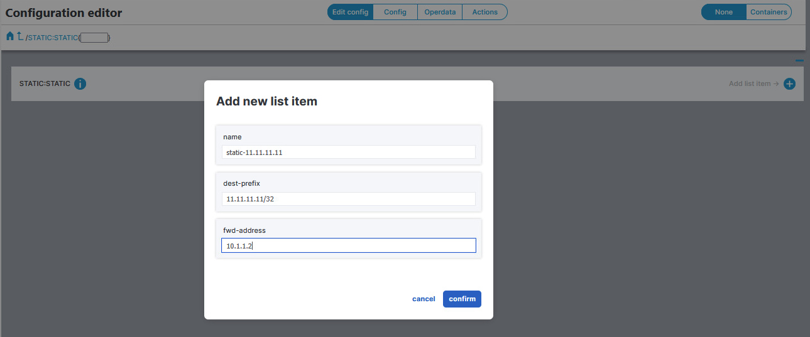
Service created — now attach devices.
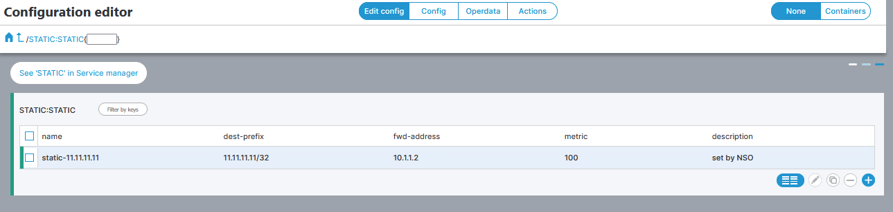
- Attach devices xr-1 and xr-2 (defaults for metric/description if shown).
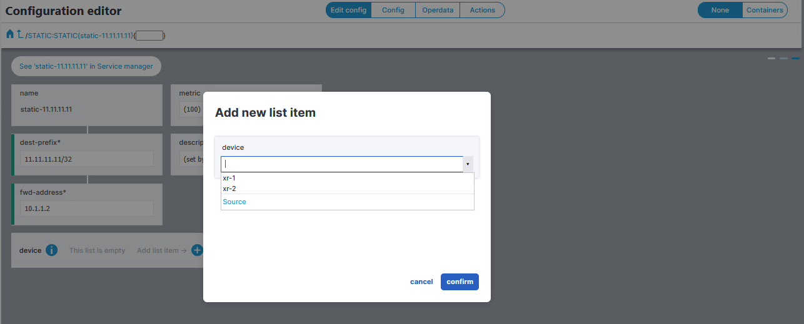
- Commit Manager → config — inspect diff; use native config if offered.
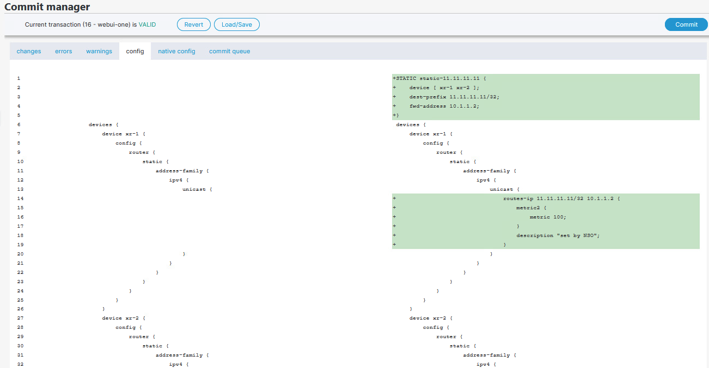
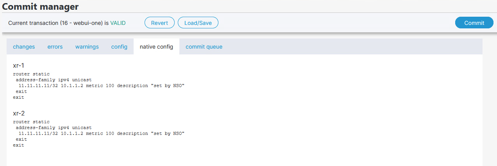
- Commit.
Step 10: Test lifecycle (intentional drift)¶
- Service Manager — service should be green / in-sync after commit.
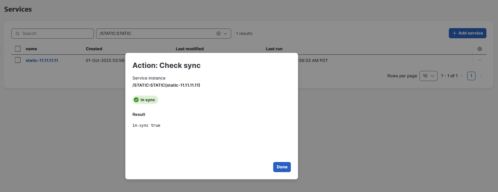
- Simulate a problem (required for this lab): on each device, Device Manager → Edit Config, delete the static route the service applied.
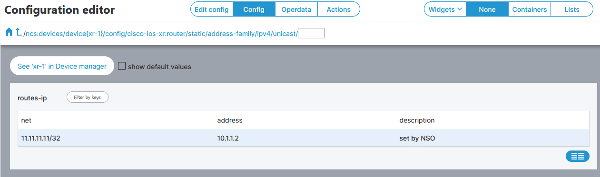
- Commit the deletion on the device context.
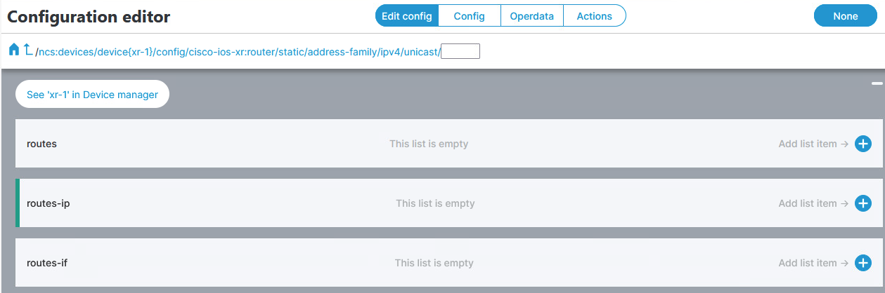
- Return to Service Manager → Check-Sync — expect a red / out-of-sync indication.
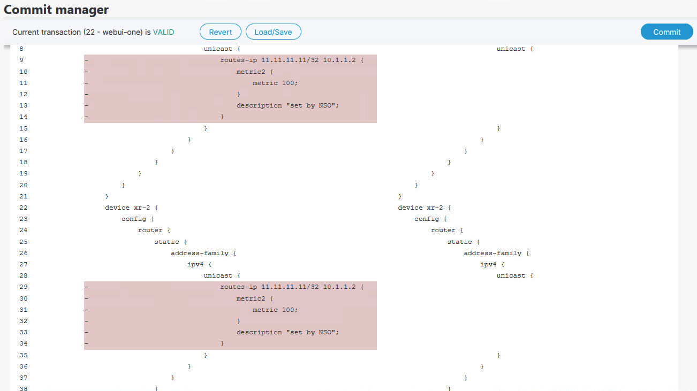
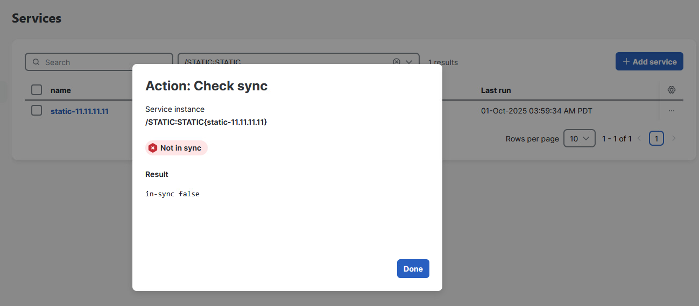
- Run Re-deploy on the service — NSO should push intent back to devices until the service is green again.
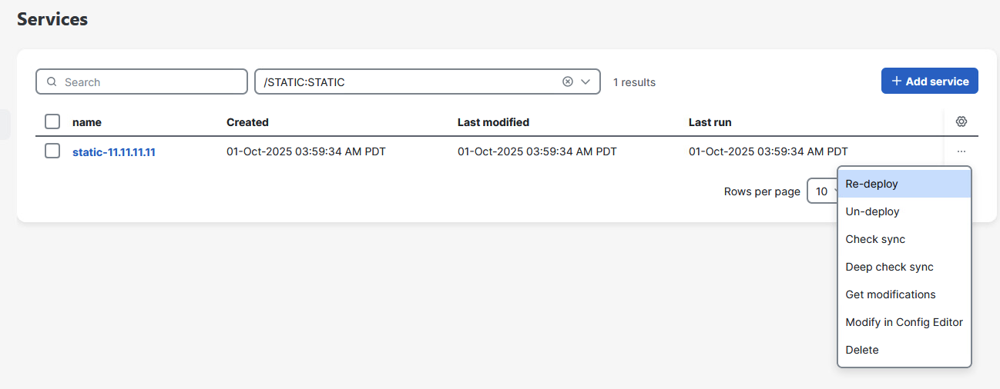
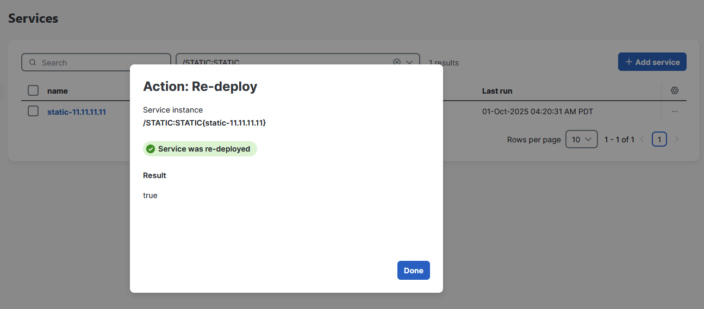
Key takeaway
Services are self-healing for configuration they own: drift is visible, and re-deploy reapplies the service’s intended configuration.
Verification¶
On xr-1, confirm the static route exists after re-deploy (documentation address — use yours):
Expected output:
router static
address-family ipv4 unicast
11.11.11.11/32 10.1.1.2 description "set by NSO" metric 100
Common Errors¶
Symptom: make fails or STATIC.fxs is missing after compile.
Cause YANG error, wrong NED namespace in template, or wrong working directory.
Fix Run `make clean` if present, fix YANG/XML per compiler errors, rebuild from `STATIC/src`.
Symptom: Service stays red after re-deploy or devices reject the route.
Cause Overlapping static routes, VRF mismatch, or device not in service device list.
Fix Verify service instance targets **xr-1** / **xr-2**, check device trace logs, roll back last service commit if needed.
Rollback
To remove this lab’s STATIC package and instance (destructive — coordinate with your class):
Then Reload packages in the Web UI and confirm STATIC is gone. Prefer Reset the Lab if the NSO instance is inconsistent.
If re-deploy cannot clear drift or the service model is inconsistent, use Commit Manager rollbacks first, then Reset the Lab if you need a clean VM.